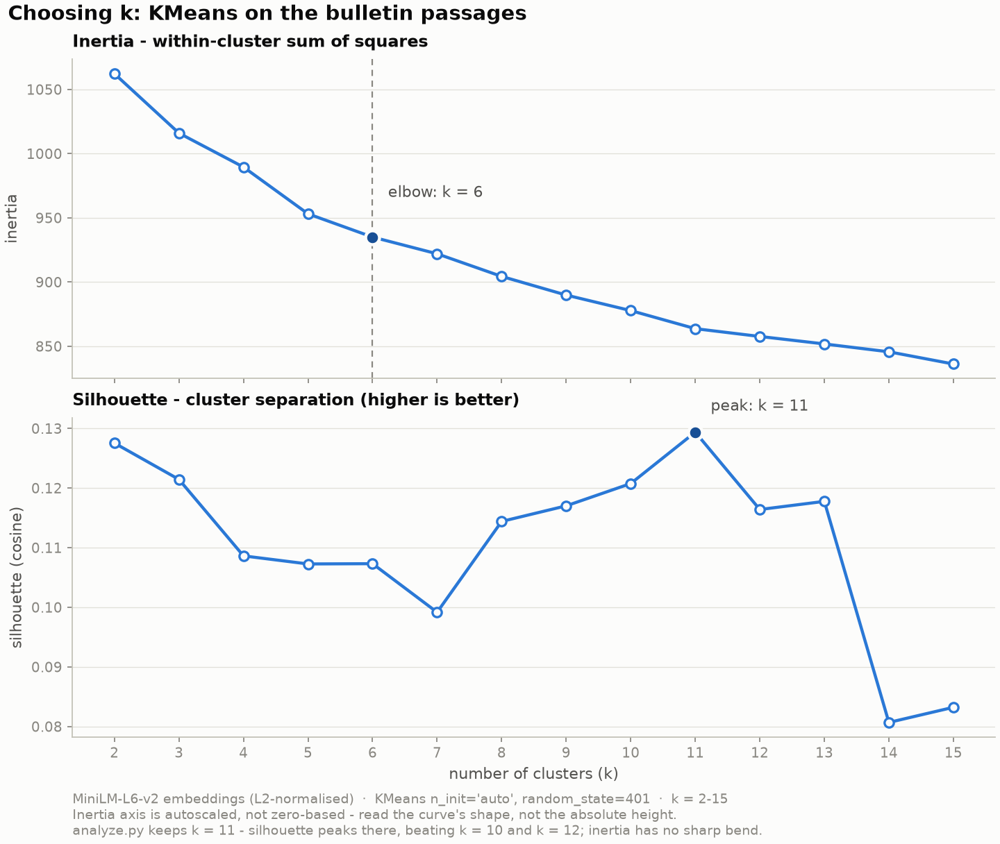

The corpus is the Bulletin of Duke Kunshan University Undergraduate
Instruction, 2021–22 edition
(V2021-22_DKU_UG_Bulletin.pdf), obtained from the official
DKU source at
dku-web-admissions.s3.cn-north-1.amazonaws.com.cn,
accessed 23 September 2026.
Two corpus-level summaries. Both use the same twelve largest sections in the same order, so the two panels can be read against each other. The section names are long enough (the longest runs to 88 characters) that the bars are horizontal — rotated x-axis labels would be unreadable. Clicking a bar applies that section as a filter on the map in section 3, which is the practical way to reach any of the 79 sections.
The third summary is the topic table: the eleven semantic topics produced by the clustering in section 3.1, with the TF-IDF terms that characterise each one.
A fourth summary, which the findings in section 5 lean on: how mixed each section's topics are. The measure is the Shannon entropy of the section's topic distribution, where 0 means every passage lands in one topic. It is only meaningful for sections with enough passages to have a distribution at all, so the table is cut at ten passages — below that, a score of 0 says "too small to tell", not "focused".
Embeddings. Each passage's cleaned text was encoded with
all-MiniLM-L6-v2 into a 384-dimensional vector
(normalize_embeddings=True, so every vector has unit
length and Euclidean distance is a monotone function of cosine
distance).
Projection. UMAP reduces those 384 dimensions to two for
display only: n_components=2, n_neighbors=15, min_dist=0.15,
metric="cosine", random_state=401. The two axes carry no meaning
of their own — they are not two interpretable semantic variables. The only claim the
map makes is that nearby passages tend to be semantically
similar.
Clustering. KMeans with k = 11
(random_state=401, n_init="auto") was fitted on the
original 384-dimensional vectors.
How k was chosen.

They measure different things. Inertia only asks how compact each cluster is; it keeps shrinking as clusters multiply, so its elbow nominates an arbitrary k=6 on a curve with no sharp bend. Cosine silhouette asks how well separated the clusters are — which is what a map of topics actually needs — and it peaks at k = 11 (0.1294), ahead of its neighbours at k=10 (0.1208) and k=12 (0.1164).
So k = 11 is kept for that better cluster separation, making the clusters more intepretable.
The axes are not labelled and are not meaningful — only proximity is. Use the search box and the filters to reduce the map to a subset, click any point for its full detail, or select a chapter to shade everything outside it.
Each answer below names the interaction used to reach it. All six of the assignment's questions are answered.
Course Descriptions (2.11) and
Majors (listed in alphabetical order) (1.94) are far
the most mixed — unsurprising, since both are catalogues spanning
every discipline.
credit live in one semantic region or
several? Search returns
153 passages across 10 of the 11 topics and 30
sections, and the readout shows it
split mainly between AP & Electives (64),
Transfer Credit (35) and Standing & Leave (26).
Passages were encoded with all-MiniLM-L6-v2 into 384-d unit
vectors, projected to two dimensions with UMAP
(n_neighbors=15, min_dist=0.15, cosine, random_state=401)
for placement only, and clustered in the original 384-d space
with KMeans at k=11 — chosen on the cosine silhouette peak
rather than the inertia elbow, which is too flat on this corpus to be
decisive. Topics were labelled by reading each cluster's most
characteristic TF-IDF bigrams and unigrams against its representative
passages; the terms ship in the topic table so the labels can be checked
rather than taken on trust.
The map encodes position as embedding, colour as topic (eleven
colour-coded, numbered legend entries), and size as passage length.
Formal section is carried by the matrix and the filters instead of by a
fourth mark on the point, since Task 11's suggested
stroke → section channel is consumed here by the highlight
system. The more consequential decision was to give dimming two
strengths rather than one: filters (section, topic) drop points to 5%
while search and chapter selection drop them to 15%, and selection is
shown with rings rather than opacity at all. Because a chapter highlight
is a fill change and a neighbour highlight is a ring, selecting a
chapter while a passage is selected leaves both legible — and the
neighbour that glows outside the highlighted chapter is precisely the
cross-section relationship the lab asks about. Clicking a matrix cell
spotlights its passages on the map without disturbing the filters, and
selecting a point outlines its own cell, so the grid and the map always
agree on what is being pointed at.
The coordinated interaction helps to link the two visualizations together
and allow users to explore the relationship between different variables.
It's not quite practical to encode the formal section into the semantic embedding
map without overcrowding the visuals. But with the coordinated interaction, relationships
with formal sections can still be easily identified and explored.